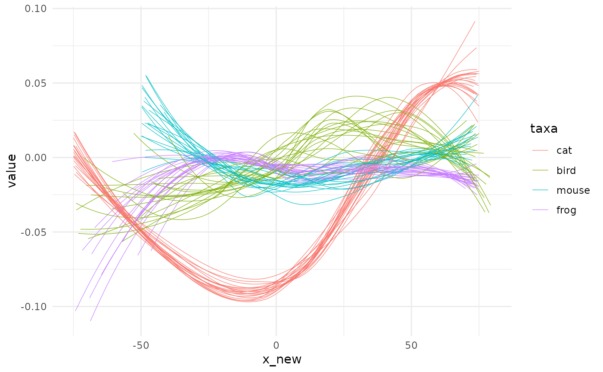
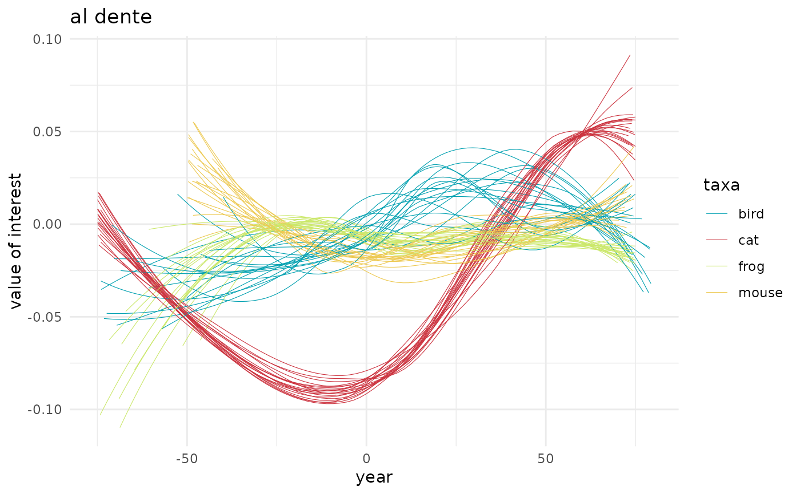
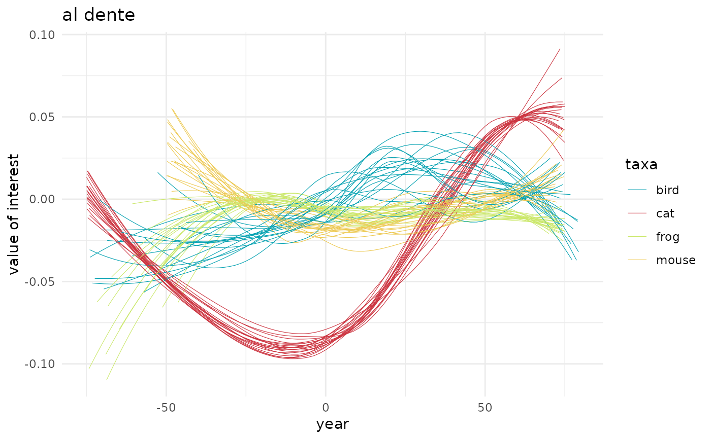

Display the result of permutations
Usage
spaghetti(df, x = x_pred, y = y_pred, by, size = 0.2, ...)
spaghetti0(
df,
x = x_new,
y = y,
by = NULL,
method = NULL,
formula = NULL,
se = FALSE,
size = 0.2,
...
)Arguments
- df
tibble()the result of a permutation function- x, y
colnames for x and y columns (
x_new/yby default)- by
colnames for grouping column (optional, default to
NULL)- size
passed to
ggplot2::geom_line()/ggplot2::geom_smooth()- ...
additional parameters to
ggplot2::geom_line()/ggplot2::geom_smooth()(egalpha) forspaghetti/spaghetti0, respectively- method, formula
passed
ggplot2::geom_smooth(), and defaults toNULLso that we letggplot2pick default method when not specified- se
passed to
ggplot2::geom_smooth(), default toFALSEto only draw lines
Details
This ggplot2 primer allows inspecting the effect of fitting
functions (spaghetti) or raw data (spaghetti0).
Examples
## spaghetti0 it the plotting function to use right after quake:
# general trend over permutations
spaghetti0(animals_q, x=x_new, y=value, col="gold")
#> `geom_smooth()` using method = 'gam' and formula 'y ~ s(x, bs = "cs")'
# per taxa now
spaghetti0(animals_q, x=x_new, y=value, by=taxa)
#> `geom_smooth()` using method = 'loess' and formula 'y ~ x'

# you can choose other parameters for geom_smooth (if that makes sense)
# for instance, here lm with no intercept
spaghetti0(animals_q, x=x_new, y=value, by=taxa, method="lm", formula=y~x-1)
 # you can also customise this using some ggplot2 spice
# note that if you library(ggplot2) you won't need all these ggplot2::
#' # color palette from https://www.colourlovers.com/palette/1473/Ocean_Five
colors <- c("bird"="#00A0B0","cat"="#CC333F", "frog"="#CBE86B", "mouse"="#EDC951")
spaghetti0(animals_q, x=x_new, y=value, by=taxa) +
ggplot2::scale_color_manual(values=colors) +
ggplot2::labs(title="al dente", x="year", y="value of interest")
#> `geom_smooth()` using method = 'loess' and formula 'y ~ x'

## spaghetti is intended for use _after_ fitting function
## it does not call geom_smooth but geom_line directly
animals_f <- fit_gam(animals_q, y=value, by=taxa, x_pred=seq(-100, 100, 10))
#> * fitting with gam(value ~ s(x_new, bs = "cs"))
# and the general behaviour is the same as fo spaghetti0 eg:
spaghetti(animals_f, by=taxa, alpha=0.5) +
ggplot2::scale_color_manual(values=colors) +
ggplot2::labs(title="on the full range", x="year", y="value of interest") +
ggplot2::guides(colour=ggplot2::guide_legend(override.aes=list(size=3, alpha=1)))
# you can also customise this using some ggplot2 spice
# note that if you library(ggplot2) you won't need all these ggplot2::
#' # color palette from https://www.colourlovers.com/palette/1473/Ocean_Five
colors <- c("bird"="#00A0B0","cat"="#CC333F", "frog"="#CBE86B", "mouse"="#EDC951")
spaghetti0(animals_q, x=x_new, y=value, by=taxa) +
ggplot2::scale_color_manual(values=colors) +
ggplot2::labs(title="al dente", x="year", y="value of interest")
#> `geom_smooth()` using method = 'loess' and formula 'y ~ x'

## spaghetti is intended for use _after_ fitting function
## it does not call geom_smooth but geom_line directly
animals_f <- fit_gam(animals_q, y=value, by=taxa, x_pred=seq(-100, 100, 10))
#> * fitting with gam(value ~ s(x_new, bs = "cs"))
# and the general behaviour is the same as fo spaghetti0 eg:
spaghetti(animals_f, by=taxa, alpha=0.5) +
ggplot2::scale_color_manual(values=colors) +
ggplot2::labs(title="on the full range", x="year", y="value of interest") +
ggplot2::guides(colour=ggplot2::guide_legend(override.aes=list(size=3, alpha=1)))